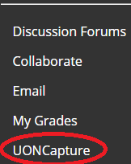
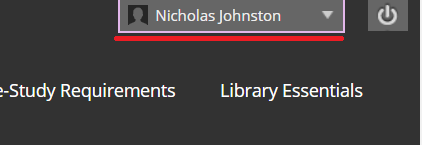
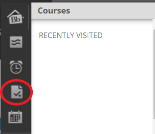
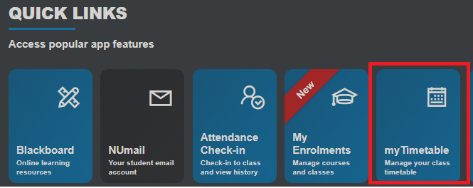
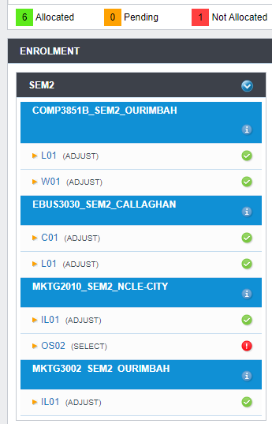
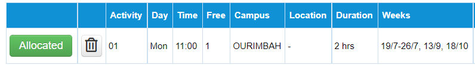

Depending on the campus there are different options for parking:
Callaghan offers both paid and free parking to students, Paid parking can be purchased in the form of either a daily ticket, 6 month or an annual pass.
Further Information
Ourimbah provides multiple parking lots around campus with entirely free parking.
NuSpace offers paid parking at Civic West car park as well as many other nearby parking stations.
Further Information
You can find your way around campus by using University of Newcastle's interactive maps to see exactly where you need to go.
The items that are recommened to bring with you to University are:
Laptop or Notepad and pen
Smartphone
Textbooks
Student ID card
University of Newcastle offers students various types of volunteering opportunities such as working at University events, BBQs, theme weeks, Community gardens and other student events around campus.
To find job and career resources within UoN it is recommended that you visit the following link
There are thousands of different computers available within UoN’s campuses as well as choice between Windows and Mac computer in which can be found using the PC Seeker form on MyUoN.
Blackboard is the central website that is used for uploading assignments, completing quizes, studying as well as looking at week to week course materials
The majority of lectures at University are recorded and automatically uploaded to Blackboard's UONCapture system, which can be accessed on the left sidebar on Blackboard

Uploading assignments is done through Blackboard, unless otherwise specified. To upload an assignment you can click on the Assessment tab and find the Turnitin link which lets you upload an assignment
Grades can be checked through Blackboard by clicking on your name in the top right and then clicking on the checkmark icon


MyUon / MyHub
MyUoN is the central hub for accessing University information and services such as quick links to NUmail, Blackboard, Enrollment, Attendance Check-in and Timetable
MyHub is the central University service for viewing tasks related to course payments, financing, course enrollment and academic records.
myTimetable is the dedicated service for selecting course allocations before the start of the semester as well as viewing your timetable for the entire semester
myTimetable can be accessed via the quick links section in MyUon

Class allocations are completed through myTimetable by selecting the times that you want to go to a class and is automatically checked for clashing times with other selected classes


Finance and Fees
There are many different ways in which course fees differentiate for individual students so it is recommended that you visit UoN's webpage for an individual needs
Fees and scholarships
Paying course fees can be done primarily through myHub
Fees for courses have a grace period called the Census date of often a few weeks into a semester where the courses can still be dropped before being charged course fees for the semester